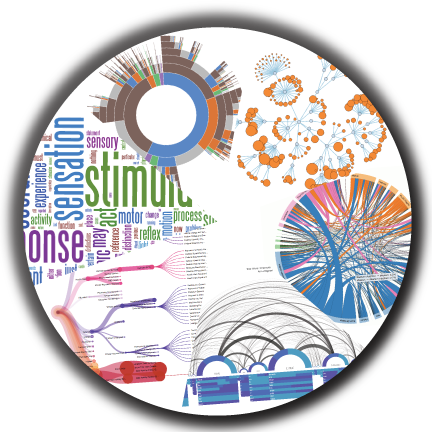

Jomics: Democratizing Omics Data Analysis Through Interactive Visual Analytics

baohong.zhang@pfizer.com
https://baohongz.github.io/Jomics
http://jomics.org
use right or left arrow key to advance or reverse slide